| [ < ] | [ > ] | [ << ] | [ Up ] | [ >> ] | [Top] | [Contents] | [Index] | [ ? ] |
Chapter summary: C++ can be like Matlab, but faster and more powerful.
The numerics library, vnl is intended to provide an environment for
numerical programming which combines the ease of use of packages like
Mathematica and Matlab with the speed of C and the elegance of C++.
It provides a C++ interface to the high-quality Fortran routines
made available in the public domain by numerical analysis researchers.
This release includes classes for
vnl_diagonal_matrix provides a fast and convenient diagonal
matrix, while fixed-size matrices and vectors allow "fast-as-C"
computations (see vnl_matrix_fixed<T,n,m> and example subclasses
vnl_double_3x3 and vnl_double_3).
vnl_svd<T>, vnl_symmetric_eigensystem<T> ,
vnl_generalized_eigensystem.
vnl_real_polynomial stores the coefficients
of a real polynomial, and provides methods of evaluation of the polynomial
at any x, while class vnl_rpoly_roots provides a root finder.
Class vnl_real_npolynomial also stores the coefficients of a
real polynomial, but possibly in more than one unknown.
Class vnl_poly is a templated class which allows to work with e.g.
integer-coefficient (but just single-variable) polynomials.
vnl_levenberg_marquardt, vnl_amoeba,
vnl_lbfgs, vnl_conjugate_gradient allow optimization of
user-supplied functions either with or without user-supplied
derivatives.
vnl_math defines constants (pi, e, eps...) and
simple functions (sqr, abs, rnd...).
To quote the header "That's right, M_PI is nonstandard!"
Class numeric_limits is from the ISO standard document,
and provides a way to access basic limits of a type. E.g.
numeric_limits<short>::max() returns the maximum value of a short.
Most routines are implemented as wrappers around the high-quality Fortran routines which have been developed by the numerical analysis community over the last forty years and placed in the public domain. The central repository for these programs is the "netlib" server http://www.netlib.org/. The National Institute of Standards and Technology (NIST) provides an excellent search interface to this repository in its Guide to Available Mathematical Software (GAMS) at http://gams.nist.gov, both as a decision tree and a text search.
For reasons of modularity (see "Layering" in the Introduction Chapter of this
book) the numerics library is split up into vnl and vnl-algo.
Matrix and polynomial representations are in vnl while anything
requiring the "netlib" software is in vnl-algo. The Fortran routines
themselves are implemented outside vxl, viz. in one of the v3p
("3rd party software") libraries.
The ANSI standard includes classes
for 1-dimensional vectors (valarray<T>) and complex numbers (
complex<T>). There is no standard for matrices. The current vnl classes
are not implemented in terms of valarray, as there is a potential
performance hit, but in the future they might be.
| [ < ] | [ > ] | [ << ] | [ Up ] | [ >> ] | [Top] | [Contents] | [Index] | [ ? ] |
This section provides a brief tutorial in using the main components of vnl.
The main components which vnl supplies are the vector and matrix classes.
The basic linear algebra operations on matrices and vectors are fully
supported. Some very brief examples follow, but for the most part the
usage of the vnl_vector and vnl_matrix classes is (we hope)
obvious and intuitive.
Using these is easy, and is often modelled on Matlab. For example, this
declares a 3x4 matrix of double:
#include <vnl/vnl_matrix.h>
int main()
{
vnl_matrix<double> P(3,4);
return 0;
}
|
Operators are overloaded as expected, so if we have another 3x4 matrix Q, we can add the two like this
vnl_matrix<double> R = P + Q; |
The vnl_vector is equally straightforward. Here we make a 4-element
vector of doubles, premultiply it by P, and print the result:
vnl_vector<double> X(4); vcl_cerr << P*X; |
Several more examples are shown in the figure below.
The vnl matrices are indexed from zero, as in C. This is always a difficult decision for C++ matrix libraries, as mathematical matrices use indices starting from 1--the top left element of A is generally written a_11. However, efficiently achieving this in C or C++ is a little bit tricky, and can confuse some tools like Purify. In the end, it was decided that zero-based indexing was closer to being "not weird".
|
| [ < ] | [ > ] | [ << ] | [ Up ] | [ >> ] | [Top] | [Contents] | [Index] | [ ? ] |
A C programmer looking at the above examples will immediately grumble about the inefficient memory allocation that is being performed. Let's look into the construction of P in more detail. One can guess that the line
vnl_matrix<double> P(3,4); |
might result in a sequence of actions something like the following:
struct vnl_matrix<double> P; P.rows = 3; P.columns = 4; P.data = new double[P.rows * P.columns]; |
The expensive part of this operation is the call to new, which might involve many instructions, and even a bit of operating system activity. (Typically a call to new or malloc will cost about as much as a 2x2 matrix multiply).
If the matrices are small, as in these examples, this cost is significant--if they're bigger than about 20x20 it is not so important. Always remember, when thinking about efficiency, to consider what else is going on in the program. For example, if a matrix is being read from disk, the time taken to read the matrix will be many times greater than a few copies. If you are about to do a matrix multiply (an O(n^3) operation after all), an O(n^2) copy or an O(1) new are not going to be hugely significant.
However, for small matrices we should try to avoid calls to new, and
vnl provides some fixed-size matrices and vectors which do so. The templates
which define these are called vnl_vector_fixed and
vnl_matrix_fixed, and the template instances include the size of the
vector or matrix in their parameters. A vector of double with fixed length
4 is defined using
vnl_vector_fixed<double, 4> |
with analogous syntax for matrices. Thus a more efficient version of the above sequence would be
#include <vnl/vnl_matrix_fixed.h>
#include <vnl/vnl_vector_fixed.h>
int main()
{
vnl_matrix_fixed<double,3,4> P;
vnl_vector_fixed<double,4> X;
vcl_cerr << P*X;
return 0;
}
|
It's a bit clumsy typing these long names, so it is common to use
typedef to make shorter ones. Indeed, a few are supplied with vnl,
for example vnl_double_3x4 (defined, of course, in a header called
vnl_double_3x4.h). So a more compact rendition of our
example is
#include <vnl/vnl_double_3x4.h>
#include <vnl/vnl_double_4.h>
int main()
{
vnl_double_3x4 P;
vnl_double_4 X;
vcl_cerr << P*X;
return 0;
}
|
Note again that in this example there will be no noticeable speedup, because 99% of the runtime will be spent on the last line, printing the vector.
Because some operations such as multiplication have been specially coded for the fixed-size classes, they are also made more efficient by knowing the sizes in advance. For example, this snippet
vnl_double_3x3 R; // Declare a 3x3 matrix
vnl_double_3 x(1.0,2.0,3.0); // Declare a 3-vector using
// local storage
vnl_double_3 rx = R * x; // Multiply R by x and place
// the result in rx
|
is expanded by many compilers into an open-coded sequence of 9 multiplies and 6 adds.
| [ < ] | [ > ] | [ << ] | [ Up ] | [ >> ] | [Top] | [Contents] | [Index] | [ ? ] |
The fixed-size classes are optimally space efficient;
sizeof(vnl_vector_fixed<double,4>) and sizeof(double[4])
are the same. To achieve this, it is necessary to decouple
vnl_vector from vnl_vector_fixed, in the sense that
neither inherits from the other. This means that you cannot pass a
vnl_vector_fixed to a function that expects a vnl_vector
without some conversion. Luckily, there is a cheap conversion operator
from vnl_vector_fixed to vnl_vector_ref, which is a
derived class of vnl_vector. This conversion operator will be
applied behind the scenes in most cases, so you often don't have to
worry about it.
double norm( vnl_vector<double> const& v );
...
vnl_vector_fixed<double,6> fixed_v;
double n = norm(fixed_v); // this will create a temporary
// vnl_vector_ref<double> const
// to pass to norm
|
The cost of the conversion is on the order of 1 pointer copy (data pointer) and 1 integer copy (length) for a vector and 1 pointer and 2 integers for a matrix.
Unfortunately, this is not the end of the story. According to the 1998 ISO C++ standard, user defined conversion operators will not be applied when determining candidate template functions. Therefore, the following snippet fails to compile.
template<typename T> T norm( vnl_vector<T> const& v ); ... vnl_vector_fixed<double,6> fixed_v; // no match for // norm(vnl_vector_fixed<double,6>) // User defined conversion operators are not // tried since norm is a template. double n = norm(fixed_v); |
For these cases, and other cases where the implicit conversion
operator cannot be applied, you have to do the conversion explicitly
using as_ref().
template<typename T>
T norm( vnl_vector<T> const& v );
...
vnl_vector_fixed<double,6> fixed_v;
double n = norm(fixed_v.as_ref()); // calls norm with
// a vnl_vector_ref<double> const
|
When writing general purpose templated functions that are equally useful for
both the dynamically allocated vnl_vector and statically
allocated vnl_vector_fixed, it is often useful to provide a
simple forwarding wrapper so that the user is spared the inconvenience
of doing the explicit conversion.
template<typename T>
T norm( vnl_vector<T> const& v ); // real function
template<typename T, unsigned n>
inline
T norm( vnl_vector_fixed<T,n> const& v ) { // thin wrapper
return norm( v.as_ref() );
}
...
vnl_vector_fixed<double,6> fixed_v;
double n = norm(fixed_v); // this calls the second norm
|
The final wrinkle with mixing vnl_vector and
vnl_vector_fixed is that the conversion operators, both the
implicit and explicit, create temporary vnl_vector_ref objects,
which, according to the standard, cannot bind to non-const
references. Therefore, you cannot pass these to a mutator function
that modifies the values in your vector.
void mutator( vnl_vector<double>& v );
...
vnl_vector_fixed<double,6> fixed_v;
mutator(fixed_v); // the temporary object created by the
// conversion is const => cannot be
// passed to mutator.
|
The only solution to this is to explicitly force the temporary object
to "give away" its const-ness, using the non_const()
method in vnl_vector_ref.
void mutator( vnl_vector<double>& v ); ... vnl_vector_fixed<double,6> fixed_v; mutator(fixed_v.as_ref().non_const()); |
The discussion above applies equally well to vnl_matrix and
vnl_matrix_fixed.
| [ < ] | [ > ] | [ << ] | [ Up ] | [ >> ] | [Top] | [Contents] | [Index] | [ ? ] |
The most frequently asked question about vnl_matrix is "where is
the inverse method", and the answer is that the inverse is not
defined as a method, because there are too many ways of forming it, each
with different tradeoffs. If you really don't care to hear about these
things, you can use the vnl_matrix_inverse class to compute an
inverse object:
#include <vnl/algo/vnl_matrix_inverse.h>
int main()
{
vcl_cerr << vnl_matrix_inverse<double>(A) * B;
return 0;
}
|
If you want more control over how the inverse is taken, then you might want
to look at vnl_inverse or at one of the decomposition classes.
TODO - order in general-specific, give flop counts, show decomps.
The following fragment demonstrates use of the vnl_svd<double> class
to find the approximation of a 3x3 matrix F by the nearest matrix of
rank 2
vnl_double_3x3 rank2_approximate(vnl_double_3x3 const& F)
{
// Compute singular value decomposition of F
vnl_svd<double> svd (F);
// Set smallest singular value to 0
svd.W(2,2) = 0;
// Recompose vnl_svd<double> into UWV^T
return vnl_double_3x3(svd.recompose());
}
|
A more extensive example of the use of linear algebra is provided in Figure 2, which contains a program to fit a hyperplane to points read from standard input.
|
| [ < ] | [ > ] | [ << ] | [ Up ] | [ >> ] | [Top] | [Contents] | [Index] | [ ? ] |
It is often the case that large linear systems have a sparse
coefficient matrix, where many of the elements are zero. An algorithm
for solving such systems is vnl_sparse_lu based on the c library, Sparse
1.3a, by Kenneth S. Kundert and Alberto Sangiovanni-Vincentelli.
The algorithm solves the linear problem
Ax = b |
by chosing a set of pivots for the matrix, A, and factoring it
into lower and upper triangular form, i.e., LU decomposition. The
solution, x, for a given b, is found by forward and back
substitution. The class vnl_sparse_lu maintains the factored
matrix so that solutions for any number of b (right hand side)
vectors can be found without repeating the pivoting and factorization
process. The factored matrix is also used to compute |A| as
well as the solution of A^t x = b. An example of solving a linear
system using vnl_sparse_lu:
#include <vnl/vnl_vector.h>
#include <vnl/vnl_sparse_matrix.h>
#include <vnl/algo/vnl_sparse_lu.h>
vnl_sparse_matrix<double> S(6,6);
S(0,0)=0.49; S(0,1)=-0.5;
S(1,0)=-0.5; S(1,1)=0.99; S(1,2)=-0.5;
S(2,1)=-0.5; S(2,2)= 0.99;
S(3,3)=0.99; S(3,4)=-0.5;
S(4,3)=-0.5; S(4,4)=0.99; S(4,5)=-0.5;
S(5,4)=-0.5; S(5,5)=0.99;
vnl_vector<double> b(6,0), x(6);
b[2]=0.5; b[3]=0.5
vnl_sparse_lu linear_solver(S, vnl_sparse_lu::estimate_condition);
linear_solver.solve(b,&x);
double det = linear_solver.determinant();
double rcond = linear_solver.rcond();
double upbnd = linear_solver.max_error_bound();
//
//Results
//
// x = { 1.1338, 1.11112, 1.06622, 1.06622, 1.11112, 1.1338 }
// det = 0.0121548
// rcond = 0.0375578 (reciprocal of the condition number)
// upbnd = 5.92331e-015 (upper bound on solution error)
//
|
Note that the algorithm does not require that A is a symmetric
matrix. The operation code, estimate_condition, specifies that
extra computation is carried out so that the condition number of the matrix and
expected error can be determined. If these quantities are not needed
then use the operation codes quiet or verbose.
| [ < ] | [ > ] | [ << ] | [ Up ] | [ >> ] | [Top] | [Contents] | [Index] | [ ? ] |
The vnl_rpoly_roots class in vnl/algo is used to compute
the roots (or "zeros") of a real polynomial. For example, given the
cubic equation
4 x^3 + 3 x^2 - 7 x + 5 = 0 |
we can compute the values of x using vnl_rpoly_roots.
The first step is to collect the coefficients into a vector, listing
from the highest power down. In the above example, we should make the
vector
[4, 3, -7, 5] |
In C++, this could be written
vnl_double_4 poly;
poly[0] = 4;
poly[1] = 3;
poly[2] = -7;
poly[3] = 5;
|
Having prepared the polynomial, we compute the roots:
vnl_rpoly_roots roots(poly); |
Now, roots contains the roots, which can be made use of, or simply
admired. To facilitate the latter, we shall print them to the console:
for (int k = 0; k < 3; ++k) // Cubic polynomial ==> 3 roots
vcl_cerr << roots[k] << vcl_endl;
|
To get just the real or imaginary parts of the (generally complex) roots,
convenience methods real(int) and imag(int) are provided. So
to print only the real roots, one might use
for (int k = 0; k < 3; ++k)
if (roots.imag(k) < 1e-8)
vcl_cerr << roots.real(k) << vcl_endl;
|
| [ < ] | [ > ] | [ << ] | [ Up ] | [ >> ] | [Top] | [Contents] | [Index] | [ ? ] |
The implementation is a wrapper for the fortran code in algorithm 493 from the ACM Transactions on Mathematical Software. This is the Jenkins-Traub algorithm, described by Numerical Recipes under "Other sure-fire techniques" as "practically a standard in black-box polynomial rootfinders". (See M.A. Jenkins, ACM TOMS 1 (1975) pp. 178-189.).
The algorithm fails if poly[0] is zero, so it's often good to try to write your problem so that the leading coefficient (i.e. poly[0]) is equal to 1.
| [ < ] | [ > ] | [ << ] | [ Up ] | [ >> ] | [Top] | [Contents] | [Index] | [ ? ] |
It is not uncommon in computer vision research to meet problems for which
there is no known closed-form solution, and a common class of such problems
are of the form "find  , and , such that the
function 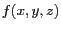 takes its minimum value". For example, fitting a
line to a set of 2D points {(x_i,y_i) | i=1..n}. The problem is then
to find a,b,c to minimize the sum of distances of each point to the line
(
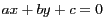 )
, and , such that the
function 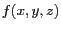 takes its minimum value". For example, fitting a
line to a set of 2D points {(x_i,y_i) | i=1..n}. The problem is then
to find a,b,c to minimize the sum of distances of each point to the line
(
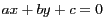 )
n (a * x[i] + b * y[i] + c)^2
f(a,b,c) = sum ---------------------------
i=1 (a^2 + b^2)
|
In the case of line fitting, a closed-form solution can be found, but in many other problems, no such solution is known, and an iterative method must be employed.
In those cases, one needs a good, general purpose nonlinear optimization
routine. Of course, such a panacea does not exist, so vnl provides
several from which to choose. The factor that decides which is best is
most frequently the amount of knowledge that one has about the form of the
function. The more you know, the more quickly you can expect the
optimization to proceed. For example, if you can compute the function's
derivatives, you would expect to achieve better performance.
| [ < ] | [ > ] | [ << ] | [ Up ] | [ >> ] | [Top] | [Contents] | [Index] | [ ? ] |
The routines provided in vnl may be arranged roughly in decreasing order of generality--and correspondingly, increasing order of speed--as follows:
vnl_amoeba: Nelder-Meade downhill simplex. The method of
choice if you know absolutely nothing about your function, but fear the
worst. It you think the function might be noisy (i.e. the error surface
has many small pockets), or you don't trust it to have reasonable
derivatives, downhill simplex is a good choice. If you want the code to
run fast, it's not.
vnl_powell: Powell's direction-set method. Powell's method,
like simplex, doesn't require that you supply the derivatives of vnl_conjugate_gradient: Fletcher-Reeves form of the conjugate
gradient algorithm.
vnl_lbfgs: Limited memory Broyden Fletcher Goldfarb Shannon
minimisation. Requires 1st derivatives. Considered to be the best
general optimisation algorithm for functions which are well behaved
(i.e. locally smooth without too many local minima.)
vnl_lbfgsb: Limited memory BFGS
bounded minimisation. Requires 1st derivatives. Allows simple box
inequality constraints.
vnl_levenberg_marquardt: The Levenberg-Marquardt algorithm for
least-squares problems. This is usually the best method for any function
which can be expressed as
f(x) = (f_1 (x))^2 + (f_2(x))^2 + (f_3(x))^2 + \dots
As an example of the use of the optimization routines, we'll use a common test case, the "notorious" Rosenbrock function:
f(x, y) = (10*(y - x^2))^2 + (1-x)^2 |
The graph of  is plotted in Figure 2.
is plotted in Figure 2.
|
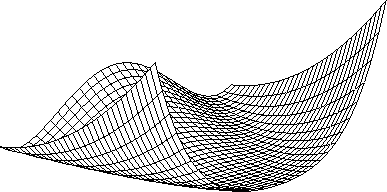 Figure 2:
The Rosenbrock "banana" function, used as an optimization test
case. Optimization starts on one side of the valley, and must find the
minimum around the corner.
|
| [ < ] | [ > ] | [ << ] | [ Up ] | [ >> ] | [Top] | [Contents] | [Index] | [ ? ] |
vnl_cost_function Running an optimization is a two step process. The first is to describe
the function to the program, and the second is to pass that description to
one of the minimizers. Functions are described by function objects,
or "functors", which are classes which provide a method f(...) which
takes a vector of parameters as input, and returns the error. Such
functors are derived from vnl_cost_function:
struct my_rosenbrock_functor : public vnl_cost_function { ... };
|
The function is a method in the derived class. Here's the continuation of
the declaration of my_rosenbrock_functor.
double f(vnl_vector<double> const& params)
{
double x = params[0];
double y = params[1];
return vnl_math_sqr(10*(y-x*x)) + vnl_math_sqr(1-x);
}
|
Because a vnl_cost_function can deal with cost functions of any
dimension, not just the 2D example here,
my_rosenbrock_functor must tell the base class the size of the
space it's working in. This is done in the constructor as follows:
my_rosenbrock_functor():
vnl_cost_function(2) {}
|
And we can now close the declaration of my_rosenbrock_functor:
} |
| [ < ] | [ > ] | [ << ] | [ Up ] | [ >> ] | [Top] | [Contents] | [Index] | [ ? ] |
In order to perform the minimization, a vnl_amoeba compute
object is constructed, passing the vnl_cost_function.
my_rosenbrock_functor f; vnl_amoeba minimizer(f); |
Having provided an initial estimate of the solution in vector x, the
minimization is performed:
minimizer.minimize(x); |
after which the vector x contains the minimizing parameters.
| [ < ] | [ > ] | [ << ] | [ Up ] | [ >> ] | [Top] | [Contents] | [Index] | [ ? ] |
The Levenberg-Marquardt algorithm provides only for nonlinear least squares, rather than general function minimization. This means that the function to be minimized must be the norm of a multivariate function. However, this often the case in vision problems, and allows us to use the powerful Levenberg-Marquardt algorithm. The Rosenbrock function can also be written as a 2D-2D least squares problem as follows:
f(x, y) = [ 10(y - x^2) ]
[ 1-x ]
|
In this case, we need to make a class derived from
vnl_least_squares_function. TODO
| [ < ] | [ > ] | [ << ] | [ Up ] | [ >> ] | [Top] | [Contents] | [Index] | [ ? ] |
This section documents some design decisions with which people might disagree. Please let me know how you feel on these issues. It's also a malleable to-do list. The most important consideration has been to provide simple lightweight interfaces that nevertheless allow for maximum efficiency and flexibility.
| [ < ] | [ > ] | [ << ] | [ Up ] | [ >> ] | [Top] | [Contents] | [Index] | [ ? ] |
As noted above, a common model in this package is that the compute objects perform computation within the constructors. While this is slightly distasteful from a traditional C++ viewpoint, it offers a number of advantages in both efficiency and ease of use.
The philosophical argument, say in the case of SVD, is that SVD is a noun.
The natural description is "The SVD of a matrix M" which is expressed in
C++ as vnl_svd<double> svd(M) .
Storage for the results of a computation is provided by the compute object which is convenient, allowing client code to access only those results in which it is interested. Local storage is also more efficient, as objects are constructed at the correct size, and initialized immediately. In contrast, passing empty objects to a function will generally involve a resize operation, while returning a structure will incur a speed penalty due to the necessary copy operations.
Namespace clutter is avoided in the vnl_matrix class. While svd()
is a perfectly reasonable method for a matrix, there are many other
decompositions that might be of interest, and adding them all would make
for a very large matrix class, even though many methods might not be of
general interest.
The model extends readily to  -ary operations such as generalized
eigensystems, which combine two objects to produce others. Such operations
cannot be methods on just one matrix.
-ary operations such as generalized
eigensystems, which combine two objects to produce others. Such operations
cannot be methods on just one matrix.
| [ < ] | [ > ] | [ << ] | [ Up ] | [ >> ] | [Top] | [Contents] | [Index] | [ ? ] |
The classes which provide for fast fixed-size matrices and vectors are
essential in a system which wants to make claims for efficiency. In
addition, a great many uses of these objects do know the size in
advance. In this case code using say vnl_double_3 is more efficient (as
well as more self-documenting) than the equivalent referring to a
vnl_vector of unknown size.
| [ < ] | [ > ] | [ << ] | [ Up ] | [ >> ] | [Top] | [Contents] | [Index] | [ ? ] |
In calling Fortran code, the first difficulty that becomes apparent is that
Fortran arrays are stored column-wise, while traditional `C' arrays are
stored row-wise - a trend that is followed by the vnl_matrix class.
One solution is simply to store C++ arrays column-wise, and this was an
early plan for the IUE.
I have not done anything to alleviate this for two reasons - most routines we call are expensive enough (i.e. 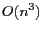 ) that the 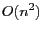 copy operation is only a small performance hit. Secondly, many decompositions satisfy a transpose-equivalence relationship. For example suppose we wish to use a Fortran matrix multiply which has been hand-optimized for some particular machine. Such a routine may be declared
mmul(A, B, C) // Computes C = A B, fortran storage |
To use this with row-stored arrays, we recall the simple identity
C = (C')' = (B' A')' = AB |
and therefore call mmul(B, A, C), reversing the order of parameters
and . The fortran code will lay down the result of
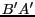 into the columns of  , thereby computing from the point of view of the caller.
, thereby computing from the point of view of the caller.
This however, doesn't apply to the vnl_svd<double>, as algorithms generally require only the
"economy-size" version where size(U) = size(M) in . This
is 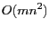 flops rather than 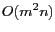 for the full size one. Using the
transpose-equivalence would mean a doubling of the computation time, as the
"economy-size" decomposition is only implemented for 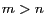 . If someone
does need the full size decomposition, a flag could be added or a new vnl_svd
class written.
| [ < ] | [ > ] | [ << ] | [ Up ] | [ >> ] | [Top] | [Contents] | [Index] | [ ? ] |
Many of the existing methods are unimplemented, or could benefit from optimization. Users can contribute code to address these deficiencies based on the existing examples, and using the conversion hints in Appendix~A. In addition there are many algorithms that ought to be included, listed roughly in order of priority:
| [ << ] | [ >> ] | [Top] | [Contents] | [Index] | [ ? ] |
This document was generated on May, 1 2013 using texi2html 1.76.